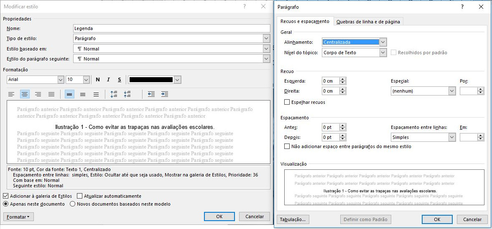
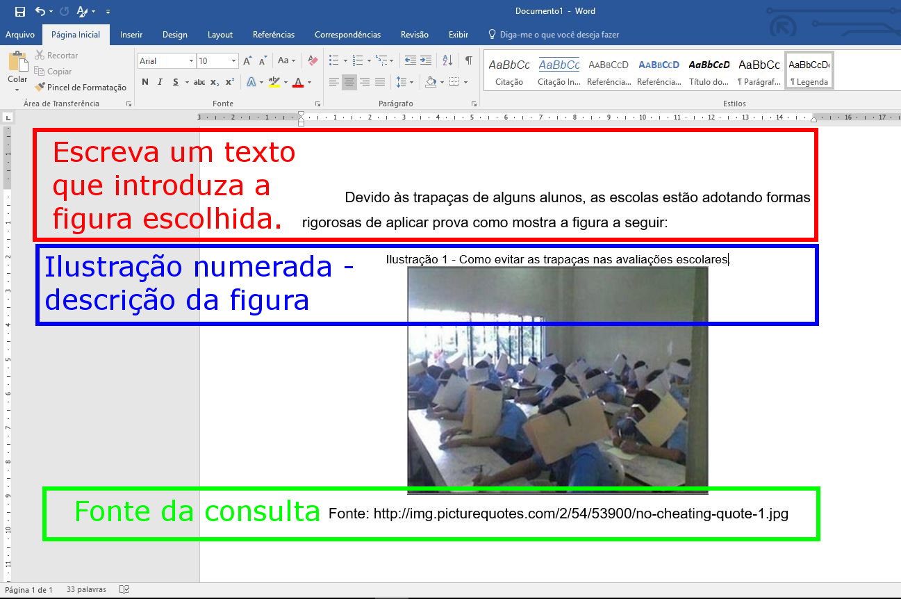

Realize o exercício cumprindo com as seguintes etapas:
A ilustração a seguir mostra como ficam as configurações do estilo legenda.

Faça o download de 4 figuras e anote o endereço do site.
Insira as figuras no seu documento com sua respectiva legenda na parte superior e fonte na parte inferior. Exemplo:

Critério de correção: Uma figura será colocada entre duas e a numeração deve mudar automaticamente quando os campos forem atualizados.
Como deve ser a entrega da avaliação: Renomeie o arquivo com o seu nome (não precisa escrever simulado, prova, Murilo). Apenas seu nome. Exemplo: "ana maria braga.docx".
Envie através do seu e-mail para murilo.fujita@am.unisal.br
| Boa prova! |
| 04/06/2018 |
| Murilo Fujita |
| Menu principal |